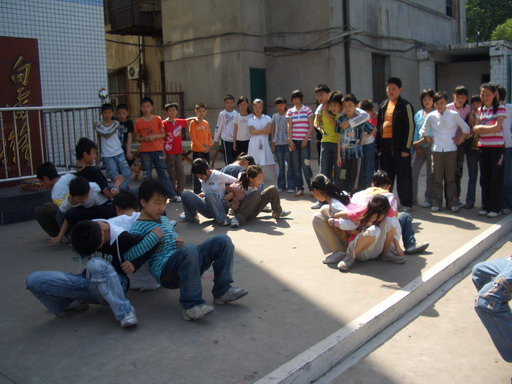

职业内动力与心智成长
课程收益：
1、学会通过DISC工具来认知自我和认识他人。
2、发现并确定自己的心智不足，并明确改进的方向。
3、学会与他人和谐共处，相互鼓励。
4、明确自身的职业优势，取长补短，确定自己的职业方向。
教学方式
讲授、引导、讨论、互动、模拟、分享、测试
课程时长
一天，共计6小时
课程纲要：
课前准备：
1、进行DISC性格测试。（10分钟）
按照测试结果划分区域，进行团队共创，列举性格表现。
2、团队建设：根据不同性格类型进行学员分组，学员分成8-10人的小组，相互认识并选出队长，明确责任。
一、性格认知
1、DISC性格的划分原则与基本分类
2、我的自画像
自我展示与小天使对话
二、自我认知与内动力生发
1、不同性格的表现与内在需求
D型性格的特点与需求
I型性格的特点与需求
S型性格的特点与需求
C型性格的特点与需求
视频解析：不同性格的表现和特点，你发现了什么？
2、性格的不同组合与表现
互补型组合
自然型组合
矛盾型组合
3、告诉你我的小秘密
我喜欢的
我讨厌的
我擅长的
我不擅长的
请你原谅我
我想对你说我希望
三、心智模式与成长
1、关于蝴蝶效应的讨论
骆驼之死的启示
2、谁在掌控一切
个人与环境的关系
视频讨论：《水知道答案》实验分享
视频讨论：踢猫效应
“垃圾人”定律
3、相信的力量
4、成长是什么
引导与讨论：我的成长目标
四、责任与目标
1、职业价值观：
人生的三个圈圈
互动讨论：职业价值的排序
2、责任在于选择
（1）没有该不该，只有要不要
（2）责任的决定权
（3）我的责任与机会
3、我是一切的根源
短片解析：生命的负重
4、建立强大的目标意识
（1）目标意识与自我意识
（2）追求目标、创造快乐
课程准备注意事项：
1、为方便学员学习与讨论，请将会场座位摆成小组讨论式，即岛型，每组8-10人为佳。
2、请准备投影、白板，音频线需能连接讲师电脑，如不能请提前告知。
3、请准备大白纸若干张，以每桌至少2张为准。准备白板笔若干，每桌至少一支。
4、课程中有相关的资料需提前打印的，会及时通知客户进行打印。
5、准备A4纸一沓。
许辰老师版权所有©2015